코딩을 몰라도, AI 에이전트에게 지시하면 완성된다
코딩을 몰라도 괜찮습니다. AI 에이전트에게 말로 지시해 가며 실제로 동작하는 웹 페이지를 하나씩 만들어 갑니다. 노코드로 가볍게 시작해, 직접 만들어 보는 사이 웹이 어떻게 움직이는지 자연스럽게 알게 되는 입문 코스입니다.
어려운 코드는 AI에게 맡기고, 만들고 싶은 걸 말로 설명하면 됩니다. 부담 없이 웹 만들기에 첫발을 들이는 시작점입니다.
매 회차마다 한 가지 개념과 결과물에 집중합니다. 한 번에 몰아치지 않고, 학습 흐름이 끊기지 않게 단계별로 쌓아 올라갑니다.
기초 8주는 보이는 웹을 탄탄히 만들고, 심화 8주는 더 풍부한 기능을 더해 한 단계 확장합니다. 학습 단계가 명확히 분리되어 있습니다.
기초 트랙에서 "보이는 결과물"을 만드는 감각을 익히고, 심화 트랙에서 "동작하는 서비스"로 확장합니다. 두 트랙이 하나의 흐름으로 연결됩니다.
AI 에이전트로 랜딩페이지를 만들고, 인터랙션·라이브러리·디자인 시스템을 거쳐 GitHub Pages로 공개까지.
기초에서 만든 페이지에 살아있는 기능을 하나씩 더해, 한 단계 더 깊은 웹으로 확장합니다.
웹의 첫 만남부터 SPARK.md 프롬프트 시스템과 배포까지, 보이는 결과물을 매 회차 한 가지씩 완성합니다.
각 회차의 학습 목표와 다루는 내용입니다. 결과물 예시는 순차적으로 업데이트됩니다.
Claude Code 첫 체험으로 시작해, 페이지의 뼈대(HTML)를 세우고 색·폰트·여백(CSS)으로 디자인을 입히는 3주간의 기초 과정입니다.
"AI 에이전트에게 지시만 하면 코드가 생긴다"는 첫 경험으로 시작합니다. 웹의 3갈래(HTML=뼈대 · CSS=꾸미기 · JS=움직임)와 16주 전체 지도를 그린 뒤, HTML로 페이지 뼈대를 세우고 CSS로 색·폰트·여백을 입혀 "같은 뼈대, 다른 옷"을 직접 경험합니다.
정적인 사진 같던 페이지에 클릭·스크롤·마우스 3대 반응을 붙여 반응하는 페이지로 진화시킵니다.
JS가 페이지에 "행동"을 부여한다는 것을 이해하고, 클릭·스크롤·마우스 3대 반응의 차이를 파악합니다. 클릭 토글, 스크롤하면 나타나는 효과, 마우스 따라가기를 각각 실습으로 완성합니다.
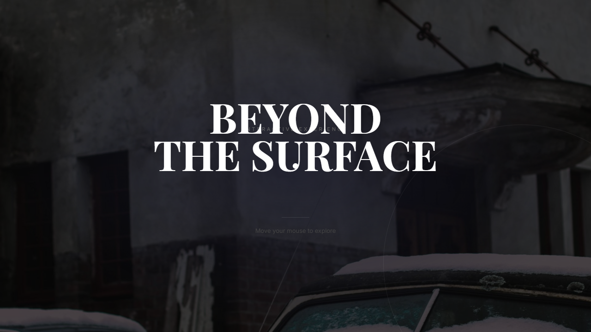
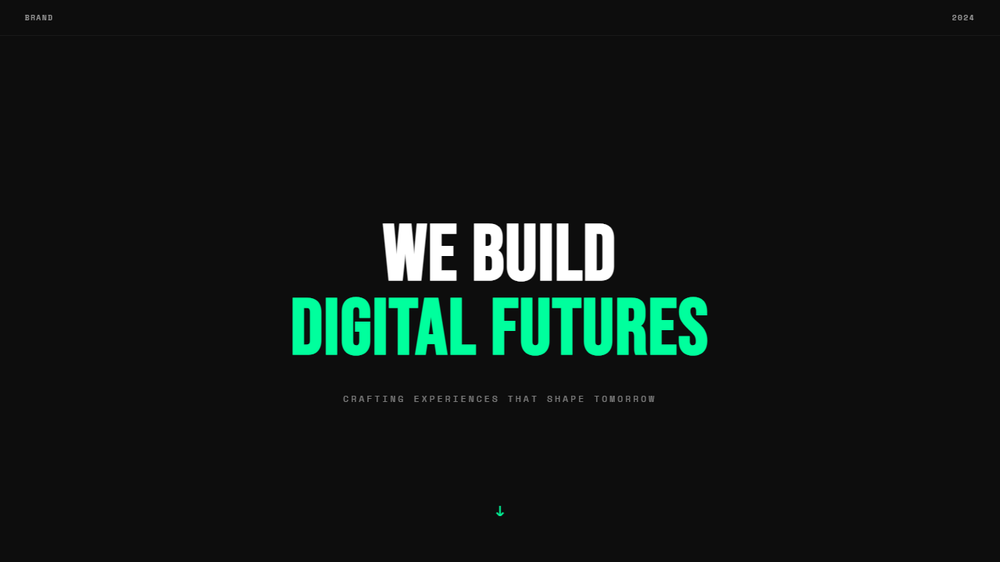
script 한 줄로 수천 줄을 빌려쓰는 "라이브러리"의 개념을 익히고, GSAP ScrollTrigger로 영화 같은 스크롤을 만듭니다.
라이브러리가 무엇인지, CDN으로 어떻게 불러오는지 이해합니다. GSAP ScrollTrigger로 수평 스크롤·텍스트 컬러 reveal·패럴랙스 같은 "영화 같은 스크롤" 효과를 지시 한 줄로 완성하는 경험을 합니다.
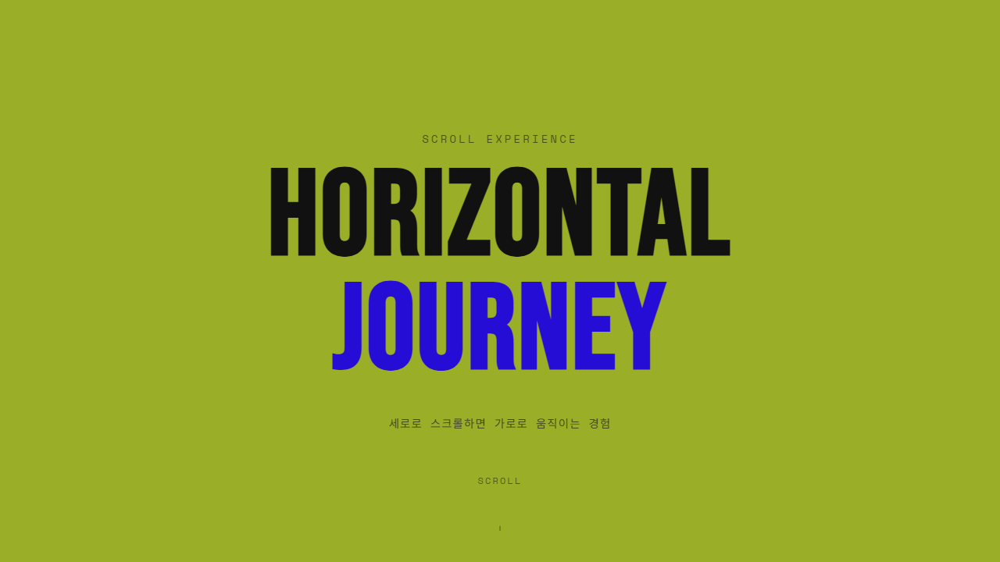
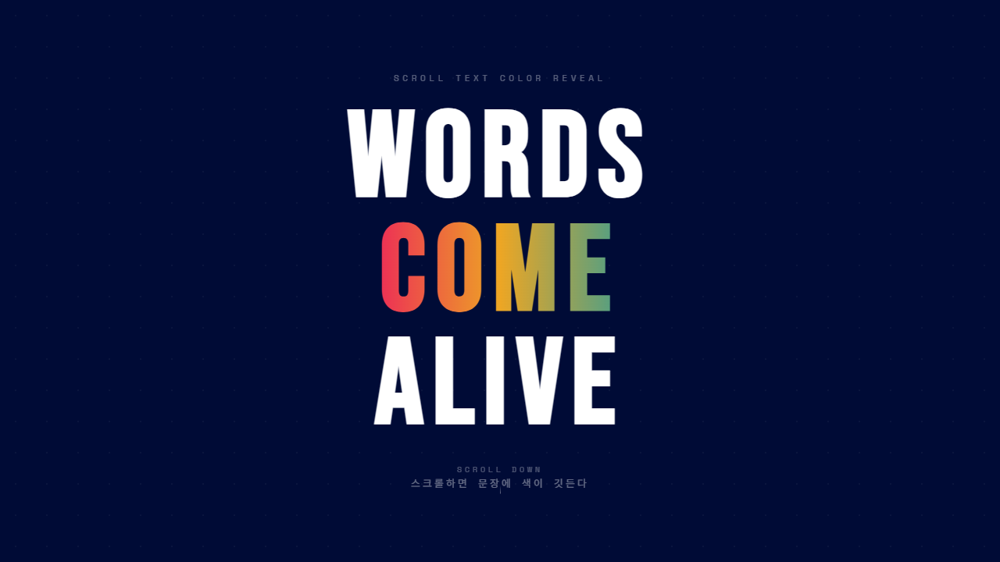
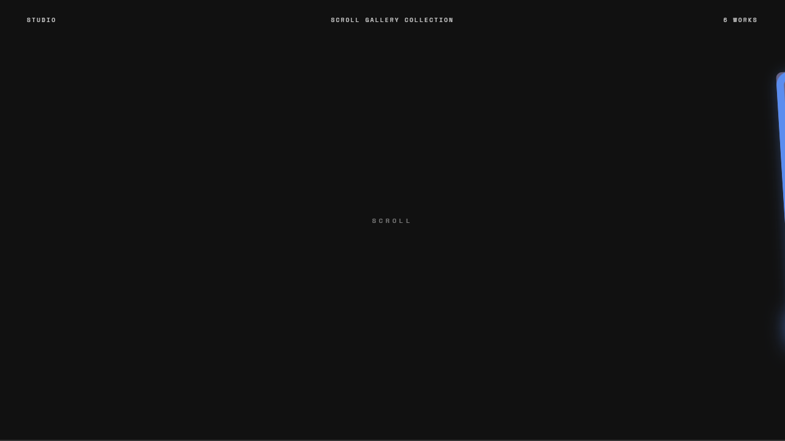
마우스 좌표를 추적하는 원리를 익히고, 마그네틱 · Flip Card · Spotlight 3종 인터랙션을 완성합니다.
마우스가 페이지의 트리거가 되는 세 가지 인터랙션 패턴을 직접 만듭니다. 자기장처럼 끌리는 마그네틱 버튼, CSS 3D로 뒤집히는 Flip Card, 마우스를 따라 빛이 퍼지는 Spotlight 효과를 지시만으로 완성합니다.
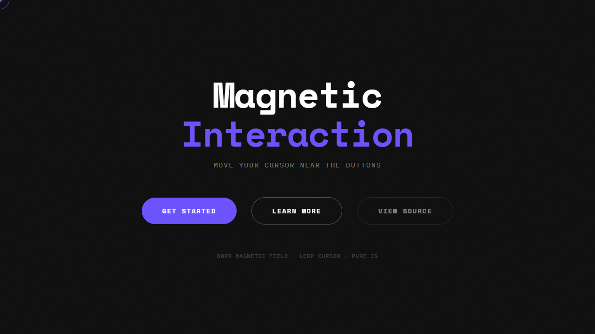
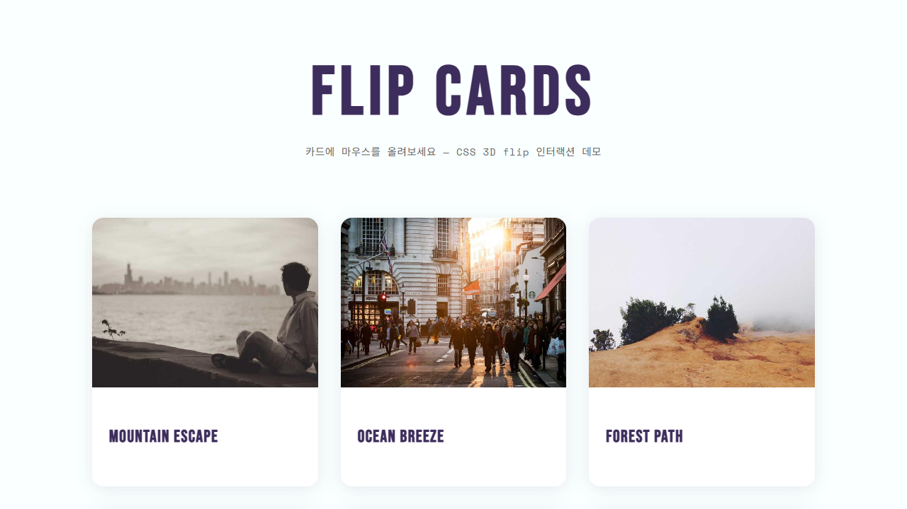
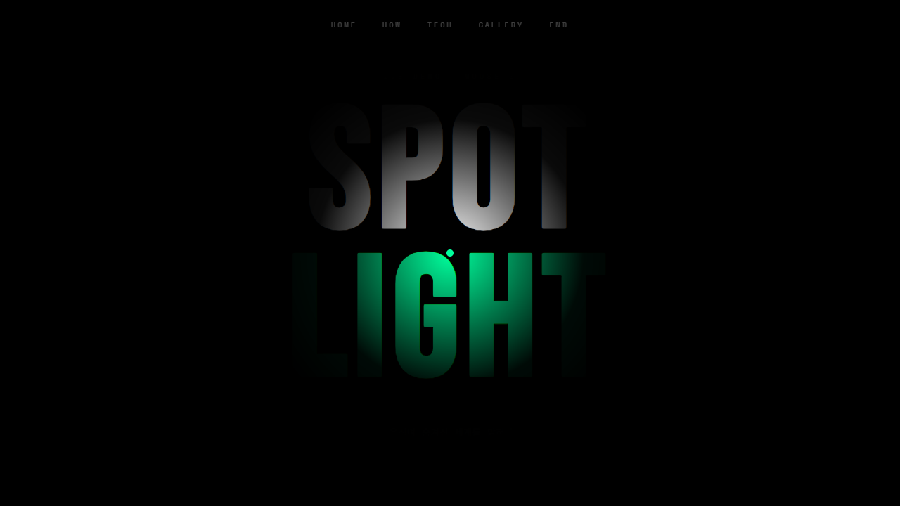
특수 효과 도구 5종(파티클·타이핑·3D·움직이는 배경·직접 그리기)으로 풀 스펙 랜딩페이지를 한 회차에 완성합니다.
전문 개발자도 시간이 걸리는 파티클·타이핑·3D·동적 배경·Canvas 그리기까지 AI 에이전트로 즉시 구현합니다. CDN 한 줄로 라이브러리를 불러오는 패턴과 라이브러리 옵션을 프롬프트로 조정하는 방법을 익힙니다.
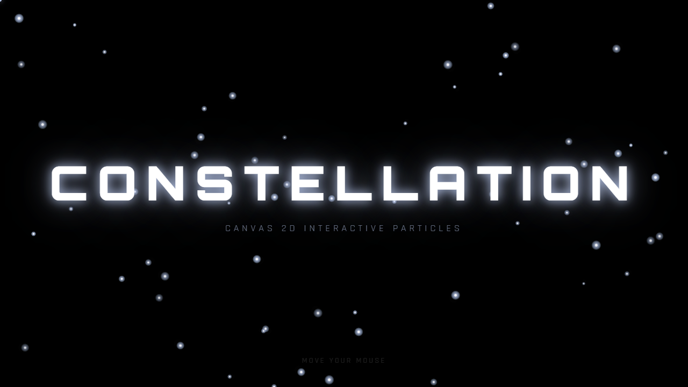
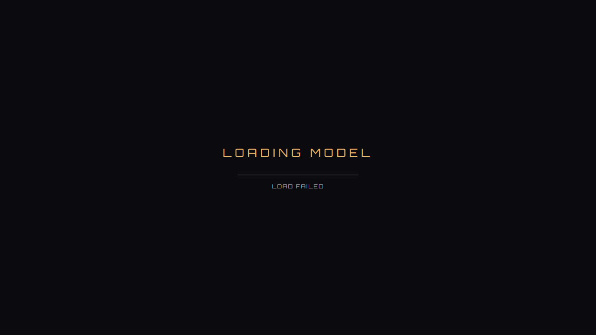
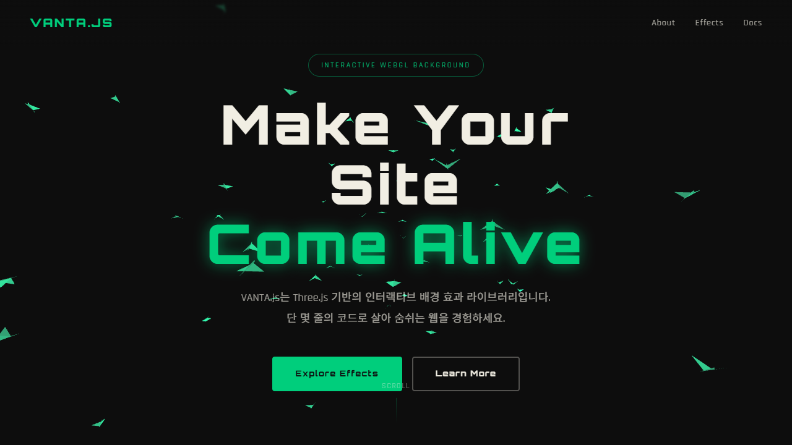
맨손 프롬프트 vs SPARK.md A/B 비교, designmd.ai로 스타일 입히기, GitHub Pages로 공개까지. 기초 트랙의 결승전.
같은 페이지를 맨손으로 한 번, SPARK.md 프롬프트로 한 번 만들어 결과 차이를 직접 비교합니다. 무료 스타일 라이브러리 designmd.ai로 톤을 입히고, GitHub Pages로 실제 인터넷에 공개해서 "내 작품 URL"을 가집니다.
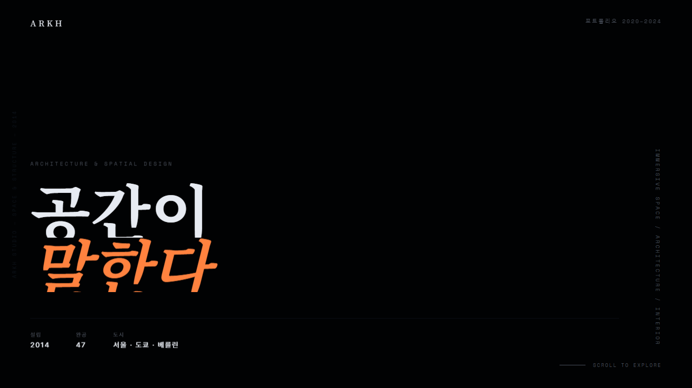
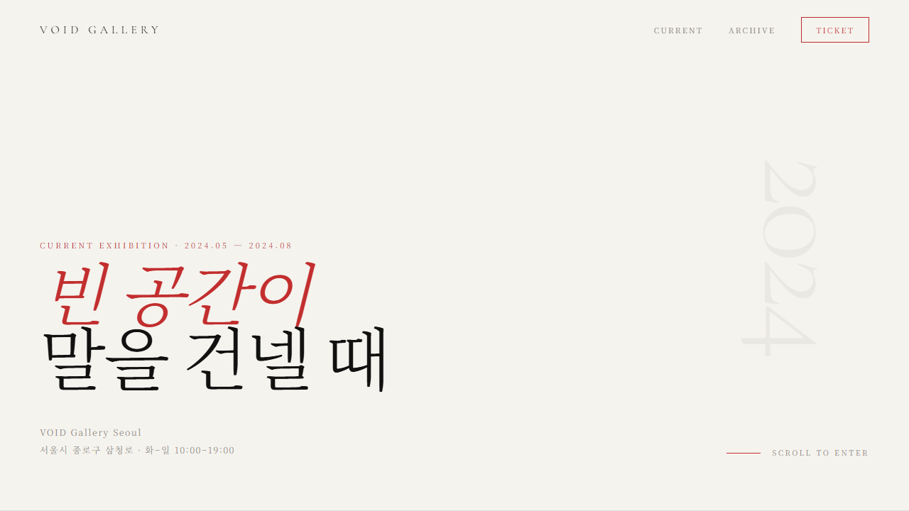
기초에서 만든 보이는 페이지에 살아있는 기능을 하나씩 더해, 한 단계 더 깊은 웹으로 확장하는 8주입니다.
각 회차의 학습 목표와 다루는 내용입니다. 결과물 예시는 순차적으로 업데이트됩니다.
외부에서 데이터를 가져오는 방법(fetch·JSON), 그리고 API 키 개념을 익히고 실시간 데이터를 페이지에 띄웁니다.
"내가 쓴 데이터"가 아니라 "외부 데이터"를 받아와 페이지에 띄우는 첫 경험을 합니다. API와 fetch의 개념을 자판기 비유로 잡고, API 키가 왜 필요한지 이해하며 키 없는 무료 API부터 기상청 API허브까지 연결하고, 한국 공개 API 목록에서 골라 자유 제작합니다.
"데이터 설계도"라는 개념을 잡고, 내 컴퓨터에 작은 서버(Flask)를 켜 CSV 파일에 데이터가 쌓이는 방명록과 쇼핑몰을 만듭니다.
데이터를 그냥 늘어놓는 게 아니라 "구조화"한다는 개념을 잡습니다. 데이터에도 설계도가 필요하며, 내 컴퓨터에 작은 서버(Flask)를 켜고 CSV 파일이 곧 데이터베이스가 되는 흐름을 직접 봅니다. 폼 입력이 CSV에 쌓이는 방명록과 상품목록 쇼핑몰을 완성합니다.
내 컴퓨터를 넘어 클라우드 DB로. Claude Code에 Supabase를 연결(MCP)해 프롬프트만으로 프로젝트·테이블을 만들고, 지난주 쇼핑몰을 클라우드로 전환합니다.
10주 데이터는 내 컴퓨터에만 남아있었습니다. 이번 주는 "어디서나 같은 데이터"를 보는 클라우드 DB로 도약합니다. Claude Code 플러그인(MCP)으로 Supabase를 연결해 프롬프트만으로 프로젝트·테이블을 만들고, 데이터 다루기(추가·조회·수정·삭제) 개념을 잡은 뒤 지난주 로컬 CSV 쇼핑몰을 클라우드로 옮깁니다. 배포 후 무료 DB가 잠들지 않게 하는 법까지.
필요한 화면부터 기획하고, 프롬프트 한 번으로 게시판 화면을 만든 뒤, 다듬고 Supabase에 연결해 글·댓글이 쌓이는 커뮤니티를 완성합니다.
만들기 전에 어떤 화면이 필요한지 기획하는 법을 익힙니다. 글 목록·상세·글쓰기·로그인 화면을 프롬프트 한 번으로 만들고, 마음에 들게 다듬은 뒤, 지난주 배운 Supabase에 연결해 글과 댓글이 진짜 저장되는 게시판을 완성합니다.
프리미엄 컴포넌트 라이브러리로 사이트를 멋지게 업그레이드하고, 가비아에서 도메인을 사서 GitHub Pages에 연결, 보안 자물쇠(https)까지 켭니다.
두 가지를 합니다. 먼저 리액트가 "화면을 조각(컴포넌트)으로 만드는 방식"임을 감 잡고, shadcn·Aceternity 같은 프리미엄 디자인 부품 모음으로 사이트를 멋지게 업그레이드합니다. 이어서 가비아에서 도메인을 사 GitHub Pages에 주소를 연결하고 보안 자물쇠(https)까지 켜 "진짜 내 주소"를 갖습니다.
GitHub Pages의 한계를 넘어 Vercel 환경으로. 서버 기능(Vercel 함수)과 비밀 키 보관으로 "서버 쪽 처리"를 처음으로 갖습니다.
미리 만든 파일만 올릴 수 있는 GitHub Pages의 한계를 짚고, Vercel로 옮겨가는 이유를 이해합니다. Vercel 함수가 어떻게 작은 서버 역할을 대신해주는지 구조를 잡고, 첫 서버 기능을 만들고 비밀 키와 내 도메인을 연결합니다.
왜 AI API 호출을 Vercel 함수에서 해야 하는지 이해하고, 텍스트 요약·이미지 생성을 내 사이트에 직접 붙입니다.
"AI 기능이 내장된 사이트"를 직접 운영해보는 날입니다. 왜 AI API 키는 브라우저가 아니라 Vercel 함수에서 호출해야 하는지 보안 관점을 잡고, 오늘 다룰 AI API 3종을 골라 텍스트 요약·이미지 생성을 내 사이트에 1개 이상 붙입니다.
토스페이먼츠로 결제 위젯을 띄우고 검증까지. 마지막으로 학생 캡스톤 발표로 16주 여정을 수료합니다.
"결제까지 동작하는 진짜 사이트"의 마지막 퍼즐을 끼웁니다. 결제 대행(PG)이 무엇이고 왜 필요한지 이해하고, 토스페이먼츠 결제 위젯을 띄워 검증·결과 페이지까지 완성합니다. 마지막으로 16주 동안 만든 본인의 캡스톤을 발표하며 코스를 수료합니다.
수업에서 만드는 완성 랜딩과 인터랙션 효과 예시예요. 카드를 누르면 실제 페이지가 팝업으로 열립니다.
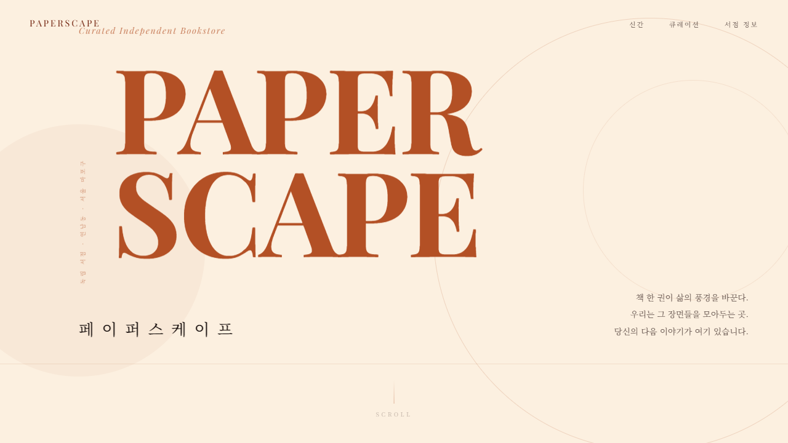
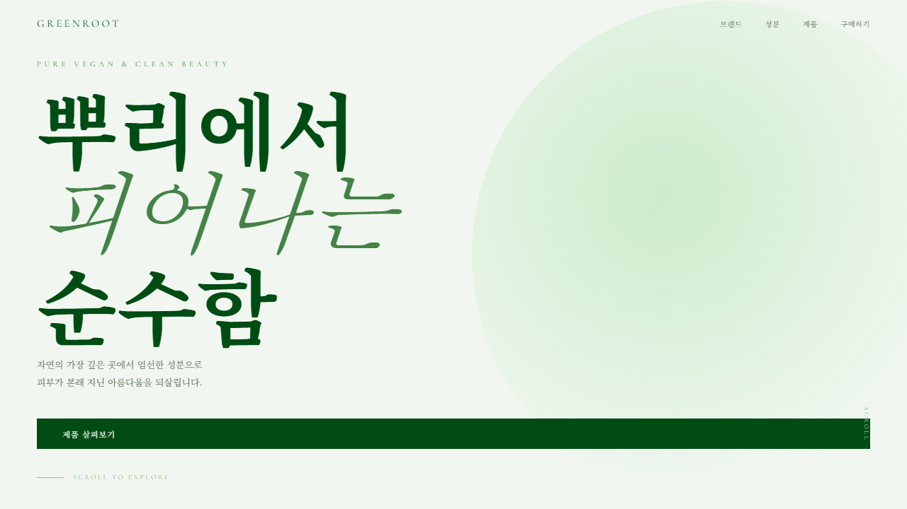
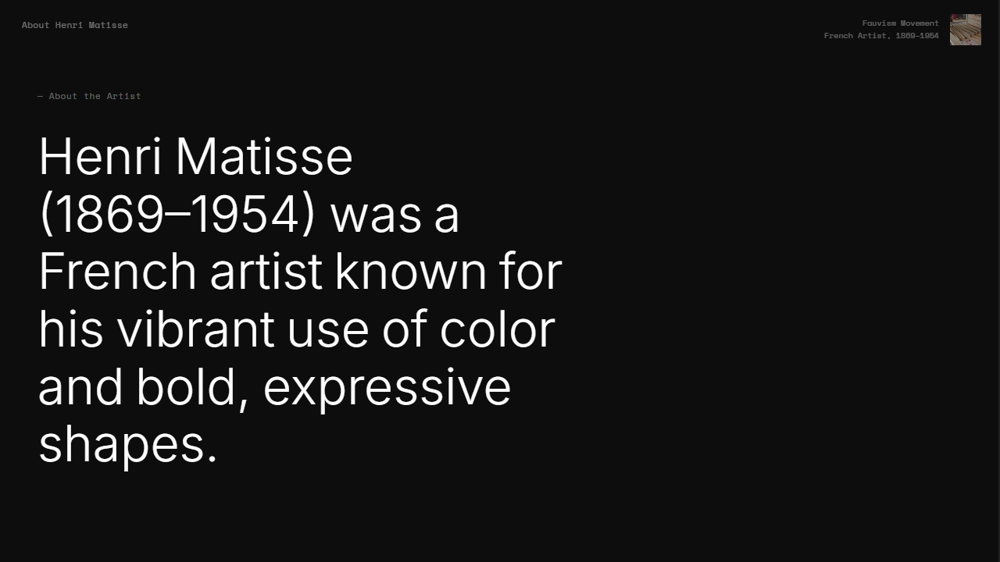
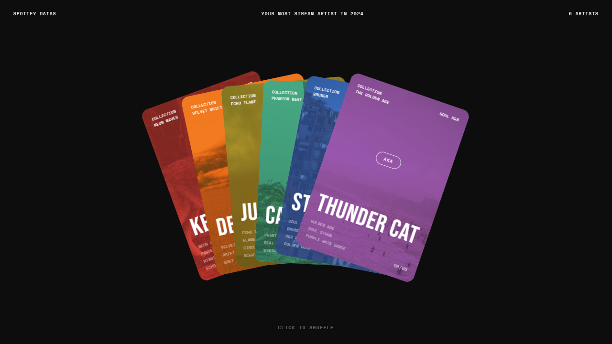
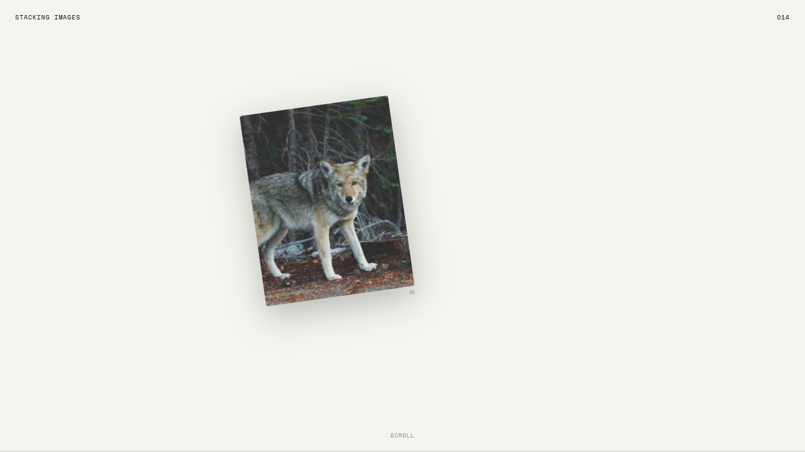